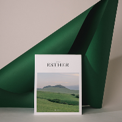

The Kinkfolk Table
par Nathan Williams
DESCRIPTION
J'ai récemment plongé dans les pages de 'The Kinfolk Table' et j'ai été enchanté par cette œuvre captivante. Ce livre va bien au-delà d'une simple collection de recettes ; il célèbre l'art de partager des moments authentiques autour de la table.
Les photographies magnifiques et le ton chaleureux captivent dès le départ, transportant le lecteur dans un voyage à travers des recettes et des histoires qui mettent en avant la beauté de la simplicité et de la convivialité.
Chaque page est une invitation à ralentir, à savourer et à créer des souvenirs durables avec les êtres chers.
'The Kinfolk Table' incarne parfaitement l'esprit de la cuisine et de la camaraderie, et il est certain que ce livre trouvera une place spéciale dans le cœur de tout amoureux de la cuisine et des rencontres inspirantes.